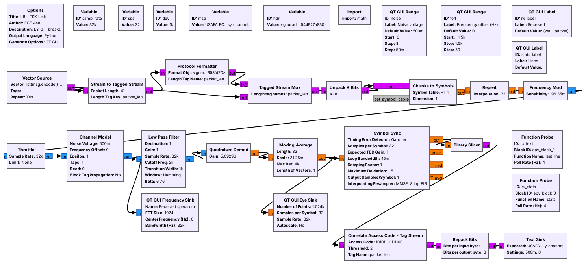

L8 Lab — FSK#
FSK
Build an FSK transmitter from an empty canvas, then find the noise level and frequency offset at which a line of text stops arriving.
L8 Lab · Module 4: Digital Modulation · Dr. Neil Rogers
Learning Objectives
- I can describe FSK modulation and implement an FSK transmitter and receiver in GNU Radio.
From Lesson to Bench
Pre-Lab: run the link flowgraph and work out the block settings.
Bench: build the transmitter yourself, then sweep the noise and the offset.
Writeup: explain what you saw and choose a deviation.
Lesson 8 showed an FSK link carrying a line of text through noise. Today you build the transmitter from an empty canvas and measure where the link breaks. The lab packet has three parts, and you turn it in once, complete, before Lesson 9. Part 1, the Pre-Lab, is on your own before the period: run L08-fsk-link.grc once, read its display, and work out the block settings and the packet timing. Part 2 is your own measurements in class. Part 3, the Writeup, explains them.
This lab needs no SDR, and nothing in it transmits. The Channel Model block stands in for the air.
Part 1: Before the Period
L08-fsk-link.grcruns and shows the received line.Work out \(k\), \(g\), \(B\), and the filter cutoff for \(\Delta f\) = 1.5 and 2 kHz.
Read how far the tones sit above the noise at two noise settings.
Do the Pre-Lab before you arrive. Question 1 is a check that L08-fsk-link.grc opens and runs on your laptop: if GRC reports an error, the L5 lesson page lists the install checks, and EI before the lab is the place to fix it.
Question 2 asks for block settings from the lesson’s formulas: the transmitter’s sensitivity, the receiver’s gain, the bandwidth, and the filter cutoff for deviations of 1500 and 2000 Hz, and the length and duration of one packet. It also asks you to read, on the running link’s spectrum, how far the two tones stand above the noise floor at two noise settings. Part 2 checks the bandwidth against your spectrum and uses the packet time when you count lines.
Part 2: Build the Transmitter
Start GRC and choose File, New, QT GUI. Do not open
L08-fsk-tx.grc; build it yourself.Set
samp_rateto 32000. Add a Variablespsof 32, a Variablemsgholding your line of text in quotes, and an Import block withimport math.Add a QT GUI Range with ID
dev, from 250 to 4000 in steps of 250, default 1000.Add a Vector Source: type byte, vector
list(msg.encode()) + [10], repeat Yes.Add Unpack K Bits with K = 8, then Chunks to Symbols: input byte, output float, symbol table
[-1, 1].Add Repeat: type float, interpolation
sps. Then add Frequency Mod with sensitivity2*math.pi*dev/samp_rate.Add a Throttle (complex,
samp_rate) and a QT GUI Frequency Sink (complex, bandwidthsamp_rate), and connect the chain. Every arrow must be black.Run it. Screenshot the canvas for Question 3(a), then record the two peaks at a deviation of 1500 and 2000 Hz, and compare each spectrum’s width with your Question 2(a) bandwidth, for Question 3(b).
Part 2: Noise and Offset

Open and run
L08-fsk-link.grc. The Lines label counts the lines received since a slider last moved.With the offset at 0, set the noise voltage to 0.5, 0.8, 1.0, 1.2, 1.5, and 2.0 in turn. At each, wait about 30 s and record the time, the lines received, and the lines correct for Question 4(a).
At 0.5 and at 1.2, screenshot the eye diagram for Question 4(b).
Set the noise back to 0.5 and raise it in steps of 0.1 until a wrong line appears. Record that noise voltage and how far the tones stand above the floor for Question 4(c).
Set the noise back to 0.5. Set the offset to 0, 300, 600, 800, and 1000 Hz in turn. At each, wait about 20 s and record the eye’s two levels and the Lines label for Question 5(a).
Still at a noise voltage of 0.5, set the offset to 1200 Hz, wait about 20 s, and record the Lines label in the \(\Delta f\) = 1000 row of Question 5(b); its \(\sigma\) = 1.2 cell comes from your noise table. Then stop the flowgraph and change the
devvariable from 1000 to 2000. The transmitter’s sensitivity, the receiver’s filter, and the demodulator’s gain all follow it. Run the two settings of Question 5(b) and record the Lines label for each.Optional, from the 2025 class: add a File Sink (float, file
demod.f32) on the Quadrature Demod output, run for a few seconds, and stop. In Audacity choose File, Import, Raw Data: 32-bit float, little-endian, 1 channel, sample rate 32000. Zoom in until you can read single bits. Nothing in the packet asks for it.
If No Text Arrives
If the Received label stays at “(waiting for a packet)”
Close the flowgraph and run it again with the sliders at their defaults, a noise voltage of 0.5 and an offset of 0, where every line should arrive within a second. If it still shows no text, compare samp_rate, sps, and dev with the lesson’s values: the transmitter and the receiver share these variables, and a change to sps alone breaks the receiver’s timing. If you changed the message, keep it on one line, because the newline at its end marks the end of each line of text.
Part 3: After the Lab
Describe how the link went from clean text to no text as the noise rose.
Convert the offset limit to ppm at 915 MHz and judge it.
Choose 1 or 2 kHz of deviation, and justify it.
The Writeup is three questions. The first asks you to describe, from your noise table and screenshots, what the eye and the text did as the noise rose, and what that means for Lesson 2’s link margin: the change from clean text to no text takes a small turn of the slider, so a link that only just works fails on the first fade. The second turns your offset limit into parts per million, the unit in which manufacturers specify crystal oscillators, and asks whether this link would work between two real radios. The third asks you to choose a deviation from your own measurements and to say what the choice gives up.
Lab Packet
Looking Ahead
Lesson 9 sends bits as pulse amplitudes: PAM.
Lesson 10 sends ASCII over PAM, in packets like today’s.
Keep your transmitter flowgraph and your tables. Lesson 9 sends each bit as the height of a pulse instead of a frequency, and Lesson 10 sends ASCII text over PAM. That link needs the same kind of packet as today’s, an access code followed by a length, so the receiver can find where each line starts.